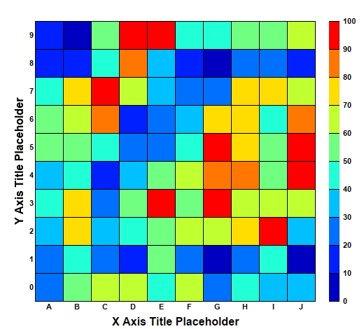

This example demonstrates the basic steps in creating a discrete heat map.
A discrete heat map consists of rectangular cells in a grid of which the cell color depends on its data value.
The following is the command line version of the code in "cppdemo/discreteheatmap". The MFC version of the code is in "mfcdemo/mfcdemo". The Qt Widgets version of the code is in "qtdemo/qtdemo". The QML/Qt Quick version of the code is in "qmldemo/qmldemo".
#include "chartdir.h"
int main(int argc, char *argv[])
{
// The x-axis and y-axis labels
const char* xLabels[] = {"A", "B", "C", "D", "E", "F", "G", "H", "I", "J"};
const int xLabels_size = (int)(sizeof(xLabels)/sizeof(*xLabels));
const char* yLabels[] = {"0", "1", "2", "3", "4", "5", "6", "7", "8", "9"};
const int yLabels_size = (int)(sizeof(yLabels)/sizeof(*yLabels));
// Random data for the 10 x 10 cells
RanSeries* r = new RanSeries(2);
DoubleArray zData = r->get2DSeries(xLabels_size, yLabels_size, 0, 100);
// Create an XYChart object of size 520 x 470 pixels.
XYChart* c = new XYChart(520, 470);
// Set the plotarea at (50, 30) and of size 400 x 400 pixels.
PlotArea* p = c->setPlotArea(50, 30, 400, 400);
// Create a discrete heat map with 10 x 10 cells
DiscreteHeatMapLayer* layer = c->addDiscreteHeatMapLayer(zData, xLabels_size);
// Set the x-axis labels. Use 8pt Arial Bold font. Set axis stem to transparent, so only the
// labels are visible. Set 0.5 offset to position the labels in between the grid lines.
c->xAxis()->setLabels(StringArray(xLabels, xLabels_size));
c->xAxis()->setLabelStyle("Arial Bold", 8);
c->xAxis()->setColors(Chart::Transparent, Chart::TextColor);
c->xAxis()->setLabelOffset(0.5);
c->xAxis()->setTitle("X Axis Title Placeholder", "Arial Bold", 12);
// Set the y-axis labels. Use 8pt Arial Bold font. Set axis stem to transparent, so only the
// labels are visible. Set 0.5 offset to position the labels in between the grid lines.
c->yAxis()->setLabels(StringArray(yLabels, yLabels_size));
c->yAxis()->setLabelStyle("Arial Bold", 8);
c->yAxis()->setColors(Chart::Transparent, Chart::TextColor);
c->yAxis()->setLabelOffset(0.5);
c->yAxis()->setTitle("Y Axis Title Placeholder", "Arial Bold", 12);
// Position the color axis 20 pixels to the right of the plot area and of the same height as the
// plot area. Put the labels on the right side of the color axis. Use 8pt Arial Bold font for
// the labels.
ColorAxis* cAxis = layer->setColorAxis(p->getRightX() + 20, p->getTopY(), Chart::TopLeft,
p->getHeight(), Chart::Right);
cAxis->setLabelStyle("Arial Bold", 8);
// Output the chart
c->makeChart("discreteheatmap.png");
//free up resources
delete r;
delete c;
return 0;
}
© 2023 Advanced Software Engineering Limited. All rights reserved.